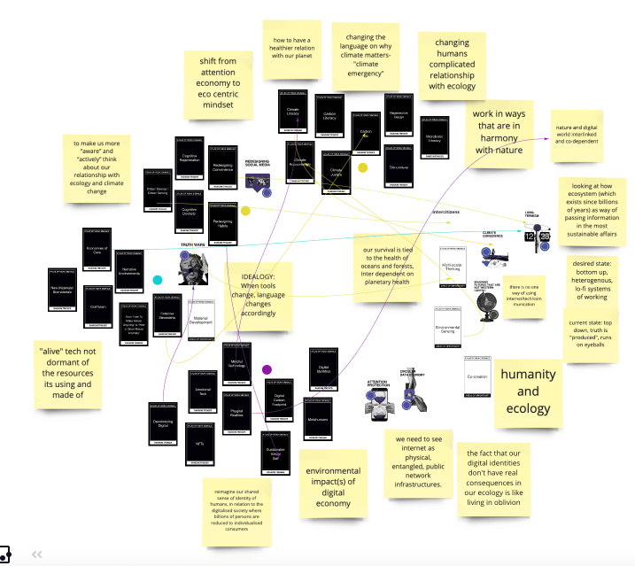
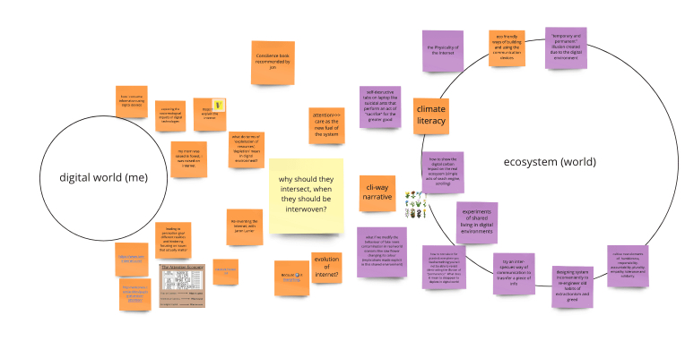
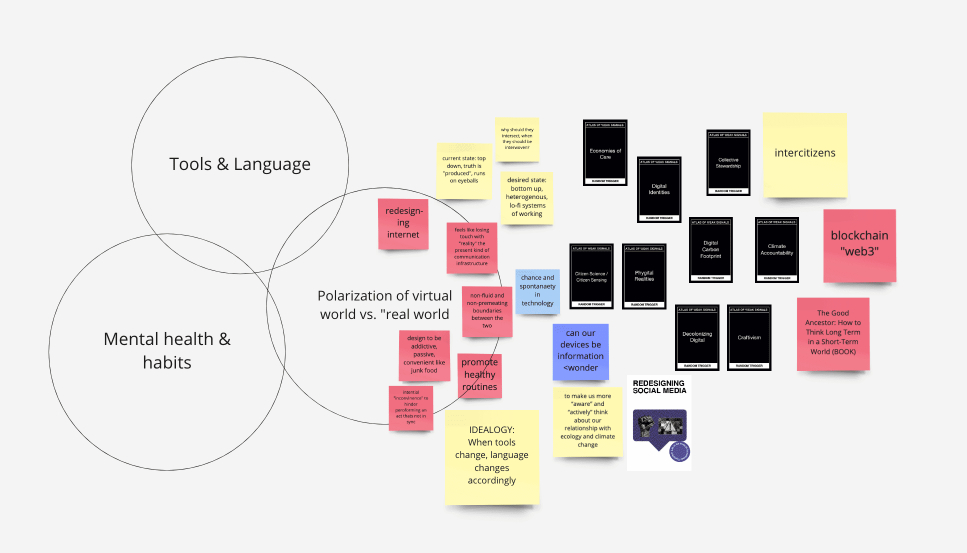

Atlas of Weak Signals
-This course was an extension of “what’s your fight” but giving it more meaning and tracing how your fight will relate to the repository of drivers and weak signals
- We created our design spaces on Miro Board where I could see everyone’s interests co-relating and offering a very interesting space to collaborate
-I want to see how this space will shape my journey further and use this as an iterative space to inform my work
-I created an are.na board to start building layers of connection to my topic- “cli-fi ways of communication”. I wish to explore the socio-technical aspects of our digital lives in the shared ecosystem we are all living in. So the approach I’m taking is looking at the meta-human aspect critically (short-termism, attention economy, disconnecting from the real world) and promote holistic fluid understanding.
Cards my fight resonated with

Someone I would like to work with: IAM, Barcelona

Notes from their website which resonated with my beliefs and work I would want to contribute to
(re)designing systems to better understand the complexity of the interrelationships and interdependence between digital economy and environmental emergency
concept of “intercitizenships”
sustainable futures for the internet(s)
the awareness of the relationship between personal experience and wider society
beyond the very “human centred design” selfish greed. A product of individualism, extractivism lifestyles and unimaginable wealth concentration
to contribute to a transition from the individualism of a user-centric digital economy to the interdependence of digital ecosystems driven the the internet citizens. Learn how to become “inter citizens’
to reimagine our shared sense of identity of humans, in relation to the digitalised society we are all building where billions of persons are reduces to individualised consumers
focusing on ‘inter’- reciprocal interrelation
activate a border sense of belonging to planet earth enabled by the internet that includes non-human beings in practice values as humbleness, responsibility, accountability, plurality, empathy, tolerance and solidarity.
we need to see the internet as physical, entangled, public network infrastructures. Understanding material dimensions and scale of digital economy is a critical factor
minerals required to make iPhones, energy consumption
invisible and complex ways that the digital economy is interconnected to massive socio-ecological crisis (NFT)
ecological framework (inside a digital economy)
collective imaginations
changing humans complicated relationship with ecology
what if we collectively decide to spend our time, attention, money and use data in a different way?

Experiments I would want to do:
changing the language on the present screen medium for the purpose of climate literacy
show the digital carbon impact on the real ecosystem (simple acts of search engine, scrolling)
experiment related to collective use of electricity (if the limit is exceeded how does it affect the collective system, like a plant dies?)
designing systems inconveniently to re-engineer old habits of extractionism and greed
looking at how a flower communicates to the roots (which exists since billions of years) as a way of passing information in the most sustainable affairs
Skill I would like to develop:
p5.js and arduino for re-designing interface interactions for the existing screens
material development for exploring bottom-up and ways of “growing” unconventional communication ( peugeot patina effect that shows the signs of use and builds up emotional connection)
back home